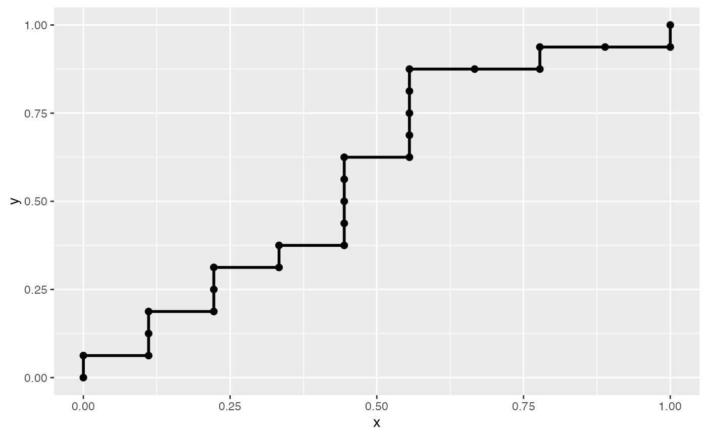

ROC Curve Coordinates
roc_xy.RdCalculate the the (x, y) coordinates of an empirical ROC curve.
Value
A matrix containing the x and y coordinates for the
ROC curve. A matrix is preferred over a data frame for speed of indexing
while iterating over the rows and having to convert between classes.
Downstream code will often convert to data frame while the main AUC
functionality prefers a matrix.
Details
This algorithm was adapted from the one in Fawcett (2006) to account to a more accurate step calculation of indices with ties. The original paper suggests moving along the diagonal when tied according to the expected sensitivity and specificity, however this does not account for ties that occur within the same class, in which case a walk along the edge of the "unknown" box is the correct decision. In this algorithm, a step in the diagonal only occurs if there is a tie and the current class name differs from the previous. Otherwise, a full step occurs in the appropriate direction, up for positive classes, right for negative classes.
References
Fawcett, Tom. 2006. An introduction to ROC analysis. Pattern Recognition Letters. 27:861-874.
Examples
n <- 25
withr::with_seed(22, {
true <- sample(c("control", "disease"), n, replace = TRUE)
pred <- runif(n)
})
xy <- roc_xy(true, pred, "disease")
xy
#> x y
#> [1,] 0.0000000 0.0000
#> [2,] 0.0000000 0.0625
#> [3,] 0.1111111 0.0625
#> [4,] 0.1111111 0.1250
#> [5,] 0.1111111 0.1875
#> [6,] 0.2222222 0.1875
#> [7,] 0.2222222 0.2500
#> [8,] 0.2222222 0.3125
#> [9,] 0.3333333 0.3125
#> [10,] 0.3333333 0.3750
#> [11,] 0.4444444 0.3750
#> [12,] 0.4444444 0.4375
#> [13,] 0.4444444 0.5000
#> [14,] 0.4444444 0.5625
#> [15,] 0.4444444 0.6250
#> [16,] 0.5555556 0.6250
#> [17,] 0.5555556 0.6875
#> [18,] 0.5555556 0.7500
#> [19,] 0.5555556 0.8125
#> [20,] 0.5555556 0.8750
#> [21,] 0.6666667 0.8750
#> [22,] 0.7777778 0.8750
#> [23,] 0.7777778 0.9375
#> [24,] 0.8888889 0.9375
#> [25,] 1.0000000 0.9375
#> [26,] 1.0000000 1.0000
# simple plotting
ggplot2::ggplot(data.frame(xy), ggplot2::aes(x = x, y = y)) +
geom_roc(outline = FALSE, shape = 19)
